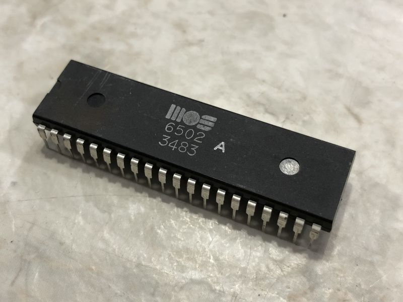

The 6502 processor, from the electronics company MOS, was a widely popular microprocessor during the 70s and 80s and was used in many different mainstream electronic devices and computers. It's impact on the electronics world is unavoidable. It defined 8-bit computing as the world knew it, and laid the groundwork for future microprocessors to follow in its footsteps.

Some popular computers that ran on the 6502 include the Apple II, the Commodore PET, Vic-20 and the Commodore 64, the Atari 2600 and the Nintendo Entertainment System.